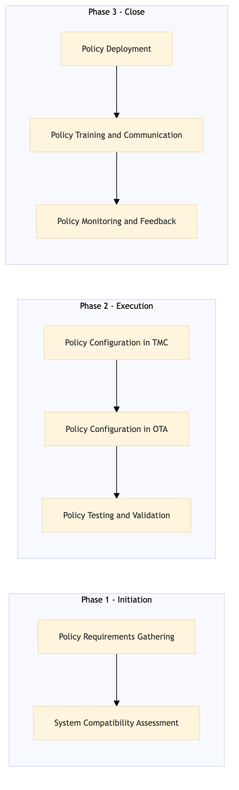

A structured process document for designing and configuring a corporate travel policy using TMC (Travel Management Company) and OTA (Online Travel Agency) platforms.
| Trigger | Initiation of a new corporate travel policy or update to an existing one by the Corporate Travel Manager. |
| Outcome | Successful design, configuration, and deployment of a corporate travel policy across all relevant systems ensuring compliance with company policies and traveler needs. |
| Systems | Expedia Open World SAP Concur Travel Amex GBT Neo/Complete Cvent Salesforce |

Click to enlarge
| Step | Name & Pain Point | Role | System | Input | Output | KPI | Flags |
|---|---|---|---|---|---|---|---|
| 1.1 | Policy Requirements Gathering Inconsistent policy interpretation across departments |
Corporate Travel Manager | None | Company policies, stakeholder requirements | Travel policy document | Number of stakeholders involved in the process | ⚠ Exception |
| 1.2 | System Compatibility Assessment System limitations affecting policy implementation |
IT Specialist | Expedia Open World, SAP Concur Travel | Travel policy document | Compatibility report | Time to complete assessment (in hours) | ◆ Decision |
| 2.1 | Policy Configuration in TMC Complexity in configuring multiple systems |
TMC Administrator | SAP Concur Travel, Amex GBT Neo/Complete | Travel policy document, compatibility report | Configured travel policy in TMC systems | Number of configuration changes required | ⚠ Exception |
| 2.2 | Policy Configuration in OTA OTA system limitations affecting policy implementation |
OTA Administrator | Expedia Open World, Amadeus NDC API | Travel policy document, compatibility report | Configured travel policy in OTA systems | Number of configuration changes required | ⚠ Exception |
| 2.3 | Policy Testing and Validation Testing gaps leading to undetected issues |
QA Engineer | Expedia Open World, SAP Concur Travel | Configured travel policy in TMC/OTA systems | Test report | Number of test cases passed | ◆ Decision |
| 3.1 | Policy Deployment Deployment delays affecting business operations |
Deployment Manager | Expedia Open World, SAP Concur Travel | Test report, approved travel policy document | Deployed travel policy in TMC/OTA systems | Time to deployment (in days) | ⚠ Exception |
| 3.2 | Policy Training and Communication Low employee engagement with new policies |
Training Coordinator | Cvent, Salesforce | Deployed travel policy in TMC/OTA systems | Training materials, communication plan | Number of employees trained | ⚠ Exception |
| 3.3 | Policy Monitoring and Feedback Lack of real-time monitoring affecting policy compliance |
Corporate Travel Manager | SAP Concur Travel, Amex GBT Neo/Complete | Deployed travel policy in TMC/OTA systems | Monitoring report, feedback loop | Number of policy violations detected | ◆ Decision |